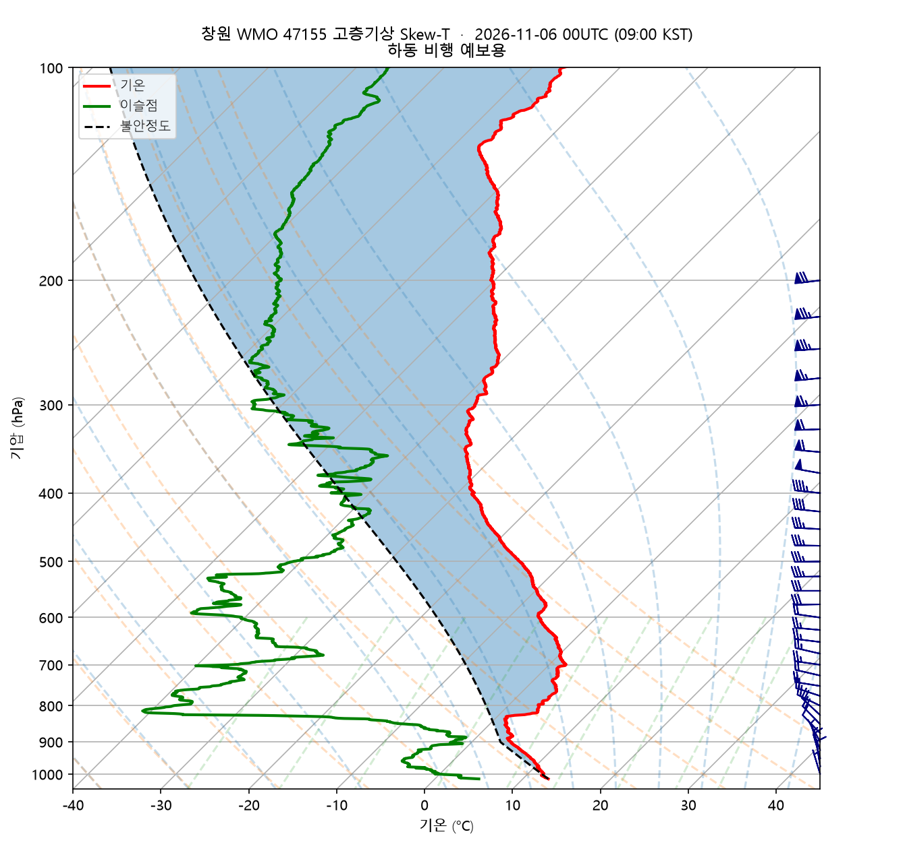

2026-11-06 · 생성: 2026-11-06 07:49 UTC

| 시작 고도 (LCL) | 1028 m |
| 상한 고도 | 1233 m |
| 써멀 강도 | 약 |
| 트리거 온도 | None°C |
역전층 이하 강한 써멀 예상 — 역전층 돌파 후 갑작스러운 상승 약화 대비
| 지표 | NNW 2.9 m/s |
| 1,000 m | NW 4.4 m/s |
| 2,000 m | WNW 10.2 m/s |
| 시어 위험도 | 중간 |
창원 WMO 47155 고층기상 자동분석 | 2026-11-06 00UTC(09:00 KST) CAPE 0 J/kg | CIN 0 | LI 14.0 | K-index -30.4 써멀 상한 추정 1233m | 운저(LCL) 1028m, 0°C 고도 3348m
하동 행글라이딩 클럽 · 브리핑 ID: 4